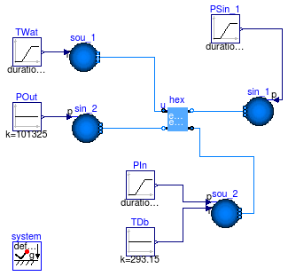

Collection of models that illustrate model use and test models
Information
This package contains examples for the use of models that can be found in
Buildings.Fluid.MassExchangers.
Extends from Modelica.Icons.ExamplesPackage (Icon for packages containing runnable examples).
Package Content

Information
Note: This problem fails to translate in Dymola 2012 due to an error in Dymola's support
of stream connector. This bug will be corrected in future versions of Dymola.
Extends from Modelica.Icons.Example (Icon for runnable examples).
Modelica definition
model ConstantEffectiveness
extends Modelica.Icons.Example;
package Medium1 =
Buildings.Media.Air;
package Medium2 =
Buildings.Media.Air;
Buildings.Fluid.Sources.Boundary_pT sin_2(
redeclare package Medium = Medium2, T=273.15 + 10,
use_p_in=true,
nPorts=1);
Modelica.Blocks.Sources.Ramp PIn(
height=200,
duration=60,
offset=101330);
Buildings.Fluid.Sources.Boundary_pT sou_2(
redeclare package Medium = Medium2, T=273.15 + 5,
use_p_in=true,
use_T_in=true,
nPorts=1);
Modelica.Blocks.Sources.Ramp TWat(
height=10,
duration=60,
offset=273.15 + 30,
startTime=60)
"Water temperature";
Modelica.Blocks.Sources.Constant TDb(k=293.15)
"Drybulb temperature";
Modelica.Blocks.Sources.Constant POut(k=101325);
Buildings.Fluid.Sources.Boundary_pT sin_1(
redeclare package Medium = Medium1,
T=273.15 + 30,
X={0.012,1 - 0.012},
use_p_in=true,
p=300000,
nPorts=1);
Buildings.Fluid.Sources.Boundary_pT sou_1(
redeclare package Medium = Medium1,
T=273.15 + 50,
X={0.012,1 - 0.012},
use_T_in=true,
p=100000,
nPorts=1);
Modelica.Blocks.Sources.Ramp PSin_1(
duration=60,
startTime=240,
height=100,
offset=1E5 - 110);
Buildings.Fluid.MassExchangers.ConstantEffectiveness hex(
redeclare package Medium1 = Medium1,
redeclare package Medium2 = Medium2,
m1_flow(start=5),
m2_flow(start=5),
m1_flow_nominal=5,
m2_flow_nominal=5,
dp1_nominal=100,
dp2_nominal=100,
show_T=true);
equation
connect(PIn.y,sou_2. p_in);
connect(TDb.y, sou_2.T_in);
connect(TWat.y, sou_1.T_in);
connect(PSin_1.y, sin_1.p_in);
connect(sou_1.ports[1], hex.port_a1);
connect(hex.port_a2, sou_2.ports[1]);
connect(POut.y, sin_2.p_in);
connect(hex.port_b1, sin_1.ports[1]);
connect(hex.port_b2, sin_2.ports[1]);
end ConstantEffectiveness;
Model that demonstrates the ideal humidifier model

Information
Model that demonstrates the use of an ideal humidifier.
Both humidifer models are identical, except that one model is configured
as a steady-state model, whereas the other is configured as a dynamic model.
Both humidifiers add water to the medium to track a set-point for the outlet
temperature using adiabatic cooling.
The temperature of the water that is added to the medium is determined by
the parameter T of the humidifier models.
Extends from Modelica.Icons.Example (Icon for runnable examples).
Parameters
| Type | Name | Default | Description |
|---|
| MassFlowRate | m_flow_nominal | 3000/1000/20 | Nominal mass flow rate [kg/s] |
Modelica definition
model Humidifier_u
"Model that demonstrates the ideal humidifier model"
extends Modelica.Icons.Example;
package Medium =
Buildings.Media.Air;
parameter Modelica.SIunits.MassFlowRate m_flow_nominal=
3000/1000/20
"Nominal mass flow rate";
Buildings.Fluid.Sources.MassFlowSource_T sou(
redeclare package Medium = Medium,
use_T_in=false,
nPorts=2,
m_flow=2*m_flow_nominal,
T=303.15)
"Source";
Buildings.Fluid.MassExchangers.Humidifier_u humSte(
redeclare package Medium = Medium,
m_flow_nominal=m_flow_nominal,
dp_nominal=6000,
tau=0,
mWat_flow_nominal=m_flow_nominal*0.005,
energyDynamics=Modelica.Fluid.Types.Dynamics.SteadyState)
"Steady-state model of the humidifier";
Buildings.Fluid.Sensors.TemperatureTwoPort senTem1(
redeclare package Medium
= Medium, m_flow_nominal=m_flow_nominal)
"Temperature sensor";
Modelica.Blocks.Sources.TimeTable TSet(table=[0, 273.15 + 30; 120, 273.15 +
30; 120, 273.15 + 25; 1200, 273.15 + 25])
"Setpoint";
Buildings.Controls.Continuous.LimPID con1(
Td=1,
k=1,
Ti=10,
controllerType=Modelica.Blocks.Types.SimpleController.PI,
reverseAction=true)
"Controller";
Buildings.Fluid.MassExchangers.Humidifier_u humDyn(
redeclare package Medium = Medium,
m_flow_nominal=m_flow_nominal,
dp_nominal=6000,
mWat_flow_nominal=m_flow_nominal*0.005,
energyDynamics=Modelica.Fluid.Types.Dynamics.FixedInitial,
massDynamics=Modelica.Fluid.Types.Dynamics.SteadyState,
T_start=303.15)
"Dynamic model of the humidifier";
Buildings.Fluid.Sensors.TemperatureTwoPort senTem2(
redeclare package Medium
= Medium, m_flow_nominal=m_flow_nominal)
"Temperature sensor";
Buildings.Controls.Continuous.LimPID con2(
Td=1,
Ti=10,
k=0.1,
controllerType=Modelica.Blocks.Types.SimpleController.PI,
reverseAction=true)
"Controller";
Buildings.Fluid.Sources.Boundary_pT sin(
redeclare package Medium = Medium,
use_T_in=false,
p(displayUnit="Pa"),
T=303.15,
nPorts=2)
"Sink";
equation
connect(senTem1.T, con1.u_m);
connect(TSet.y, con1.u_s);
connect(con1.y, humSte.u);
connect(humSte.port_b, senTem1.port_a);
connect(senTem2.T, con2.u_m);
connect(TSet.y, con2.u_s);
connect(con2.y, humDyn.u);
connect(humDyn.port_b, senTem2.port_a);
connect(sou.ports[1], humSte.port_a);
connect(sou.ports[2], humDyn.port_a);
connect(senTem1.port_b, sin.ports[1]);
connect(senTem2.port_b, sin.ports[2]);
end Humidifier_u;
Automatically generated Mon Jul 13 14:25:37 2015.
 Buildings.Fluid.MassExchangers.Examples.ConstantEffectiveness
Buildings.Fluid.MassExchangers.Examples.ConstantEffectiveness